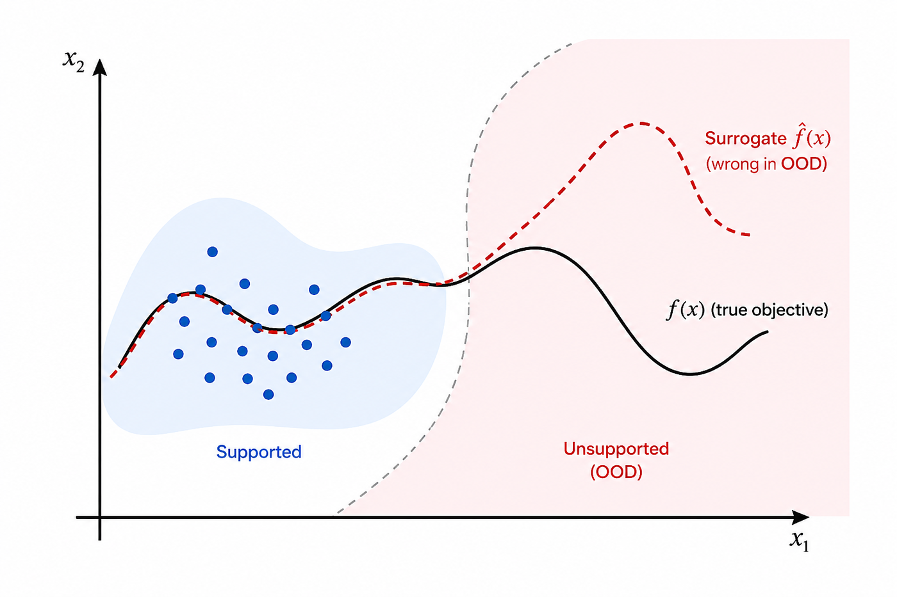
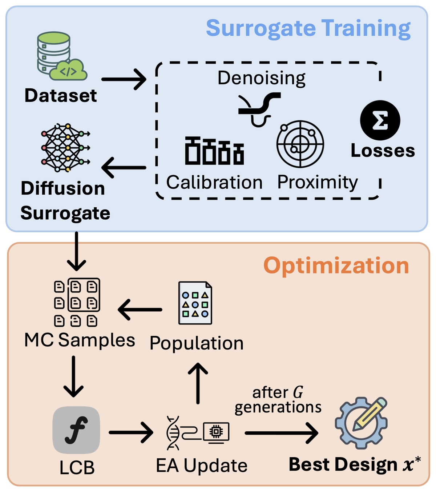
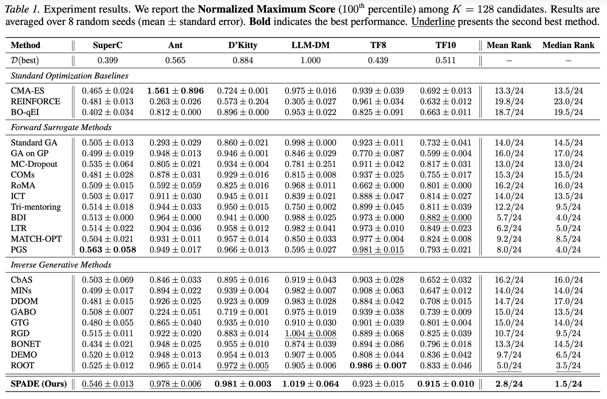
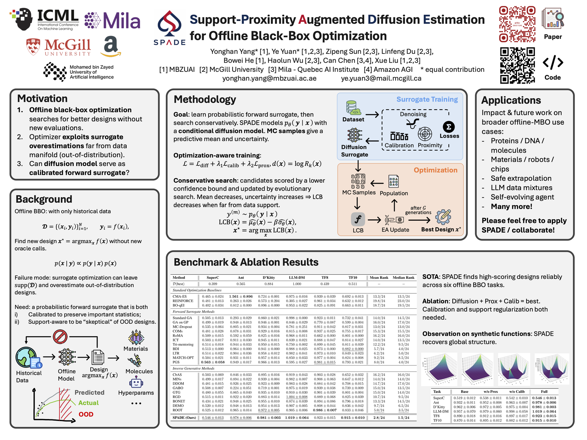

Conditional Diffusion Surrogate
Models \(p_\theta(y|x)\) and estimates predictive mean and uncertainty from Monte Carlo samples.
A calibrated conditional diffusion surrogate with support-proximity regularization for robust offline black-box optimization under OOD risk.
MBZUAI · McGill University · Mila - Quebec AI Institute · Amazon AGI
* Equal contribution. Correspondence: ye.yuan3@mail.mcgill.ca
Overview
SPADE turns forward surrogate modeling into a calibrated conditional diffusion problem and injects a kNN support prior to prevent offline optimizers from exploiting unsupported regions.
Offline black-box optimization searches for high-scoring designs from a fixed dataset without new oracle calls. This setting appears in materials, robot morphology, DNA sequence design, and LLM data-mixture optimization, where each real evaluation can be expensive or unavailable.
SPADE models \(p_\theta(y|x)\) with a conditional diffusion surrogate, calibrates its moments and rankings for optimization, and regularizes predictions according to data support. Candidates far from the dataset receive lower means and higher uncertainty, which makes LCB-based acquisition search more conservative.
Motivation
Surrogate optimizers actively search for high predicted scores. Without a notion of support, the search can amplify surrogate overestimation in regions where historical data provides little evidence.

Method

Models \(p_\theta(y|x)\) and estimates predictive mean and uncertainty from Monte Carlo samples.
Adds moment matching and pairwise rank consistency so generated score distributions remain useful for optimization.
Uses kNN distance as a support proxy; low-support candidates receive mean shrinkage and variance inflation.
Optimization
Results
SPADE achieves the best overall ranking across six benchmark tasks and places in the top two on five of six normalized maximum-score tasks.

Ablation
| Task | Base | w/o Prox | w/o Calib | Full SPADE |
|---|---|---|---|---|
| SuperC | 0.519 | 0.538 | 0.542 | 0.546 |
| Ant | 0.932 | 0.952 | 0.963 | 0.978 |
| D’Kitty | 0.962 | 0.972 | 0.975 | 0.981 |
| LLM-DM | 0.957 | 0.979 | 0.998 | 1.019 |
| TF8 | 0.890 | 0.912 | 0.897 | 0.923 |
| TF10 | 0.870 | 0.895 | 0.882 | 0.915 |
Full SPADE is best on all six tasks, showing that calibrated diffusion and support-proximity regularization are complementary.
Materials
The ICML poster and presentation deck are included in this repository for the project page.

Code
The package exposes dataset loading, configuration, surrogate training, and acquisition optimization through a small public API.
git clone https://github.com/HarryYoung2018/spade.git
cd spade
conda create -n spade python=3.10 -y
conda activate spade
pip install -r requirements.txt
pip install -e .import torch
from spade import Dataset, SpadeConfig, train_spade, optimize_spade
data = Dataset.from_npz("dataset.npz")
cfg = SpadeConfig()
device = torch.device("cuda" if torch.cuda.is_available() else "cpu")
model = train_spade(data, cfg, device=device)
result = optimize_spade(model, data, cfg, device=device)Reproducibility
This release includes the method implementation, an NPZ quickstart runner, and smoke tests. It does not include the full benchmark preprocessing and evaluation stack for Design-Bench, TFBind, or LLM-DM.
Read reproducibility statusCitation
@inproceedings{yang2026spade,
title = {Support-Proximity Augmented Diffusion Estimation for Offline Black-Box Optimization},
author = {Yang, Yonghan and Yuan, Ye and Sun, Zipeng and Du, Linfeng and He, Bowei and Wu, Haolun and Chen, Can and Liu, Xue},
booktitle = {Proceedings of the 43rd International Conference on Machine Learning},
series = {Proceedings of Machine Learning Research},
volume = {306},
address = {Seoul, South Korea},
publisher = {PMLR},
year = {2026}
}@article{yang2026support,
title = {Support-Proximity Augmented Diffusion Estimation for Offline Black-Box Optimization},
author = {Yang, Yonghan and Yuan, Ye and Sun, Zipeng and Du, Linfeng and He, Bowei and Wu, Haolun and Chen, Can and Liu, Xue},
journal = {arXiv preprint arXiv:2605.11246},
year = {2026}
}